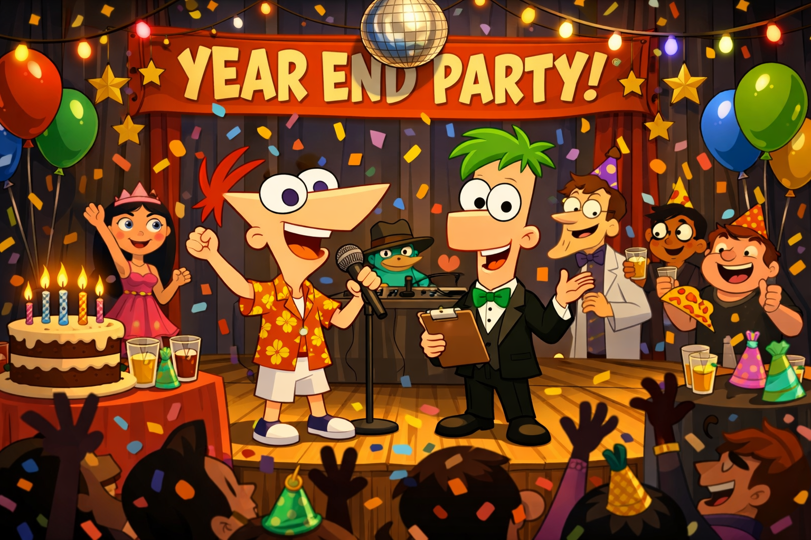

|

|
Ngành nghề: Quản trị sự kiện
Sơ lược
Quản trị sự kiện (Event Management) là ngành học và lĩnh vực chuyên môn tập trung vào việc lập kế hoạch, tổ chức, thực hiện, giám sát toàn bộ quy trình của các loại hình sự kiện (hội nghị, lễ hội, tiệc cưới, ra mắt sản phẩm, sự kiện văn hóa, thể thao...) để đạt được mục tiêu đề ra, bao gồm cả quản lý ngân sách, nhân sự, marketing, xử lý rủi ro và tạo trải nghiệm cho khách hàng.
Yêu cầu
- Sáng tạo, năng động, chịu áp lực cao, sức khỏe tốt.
- Kỹ năng giao tiếp, đàm phán, làm việc nhóm, giải quyết vấn đề.
- Khả năng lập kế hoạch, quản lý thời gian và ngân sách.
- Kiến thức về marketing, truyền thông, quan hệ công chúng.
Các hoạt động chính
- Lên ý tưởng và kế hoạch: Nghiên cứu khách hàng, xác định mục tiêu, đối tượng, lên concept, kịch bản, ngân sách.
- Tổ chức và điều phối: Tìm địa điểm, xin giấy phép, phân bổ nguồn lực, mời diễn giả/nghệ sĩ, sắp xếp hậu cần, kỹ thuật (âm thanh, ánh sáng, sân khấu).
- Thực hiện sự kiện: Giám sát diễn ra theo kế hoạch, xử lý tình huống phát sinh, quản lý rủi ro.
- Đánh giá và báo cáo: Nghiệm thu, báo cáo hiệu quả và kết quả cuối cùng.
Các loại hình sự kiện
- Doanh nghiệp: Hội thảo, team building, year-end party, activation, ra mắt sản phẩm.
- Văn hóa-Giải trí: Hòa nhạc, lễ hội, triển lãm, show diễn.
- Du lịch MICE: Hội nghị, hội thảo, du lịch kết hợp sự kiện.
- Xã hội và Cộng đồng: Gây quỹ, chiến dịch tình nguyện, sự kiện thể thao phong trào.
- Cá nhân: Tiệc cưới, sinh nhật cao cấp.
Lí do chọn ngành
Lý do chọn ngành
|